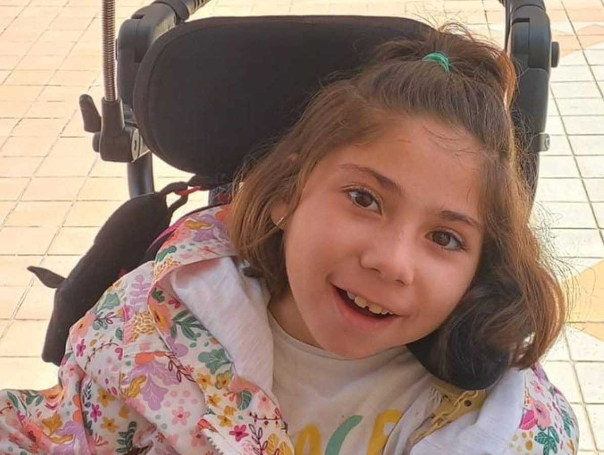

A Síndrome de Rett é classificada como uma alteração genética grave e rara afetando em
sua grande maioria pessoas do sexo feminino, podendo ser definida como uma desordem
neurológica afetando assim o neurodesenvolvimento. É caracterizada por uma perda gradual
das habilidades motoras e cognitivas, além de déficits de comunicação e comportamentais.
Geralmente seus primeiros sintomas são manifestados nos primeiros anos de vida da criança
e tem estimativa de prevalência mundial de 1 em 20.000 - 40.000 pessoas.
(Fonzo, M., Sirico, F., & Corrado, B. 2020).
Embora até recentemente tida como condição que afetava apenas o
sexo feminino, também pode estar presente no sexo masculino, ainda que
com fenótipo diverso.

DIAGNÓSTICO
O diagnóstico geralmente é feito por uma equipe multidisciplinar, composta por
profissionais como: pediatra, neurologista pediátrico, geneticista e pediatra
especialista em neurodesenvolvimento, que irão avaliar os sinais e características
físicas e neurológicas da criança. Cientistas desenvolveram um teste genético para complementar o diagnóstico
clínico, que envolve a pesquisa da mutação MECP2 no cromossomo X.
MANIFESTAÇÕES CLÍNICAS
Os sintomas, progressão e gravidade das pessoas com RTT podem variar de um paciente
para outro, levando a uma ampla gama de deficiências neuromotoras e intelectuais.
Na maioria dos casos a gravidez e o parto da mulher ocorrem normalmente.
As primeiras características do RTT começam a se manifestar na primeira
infância e aparecem progressivamente ao longo de vários estágios: estagnação
(idade de 6 a 18 meses), regressão rápida (idade de 1 a 4 anos), pseudo
estacionária (idade de 2 anos – potencialmente vida) e deterioração motora
tardia (idade de 10 anos de vida).